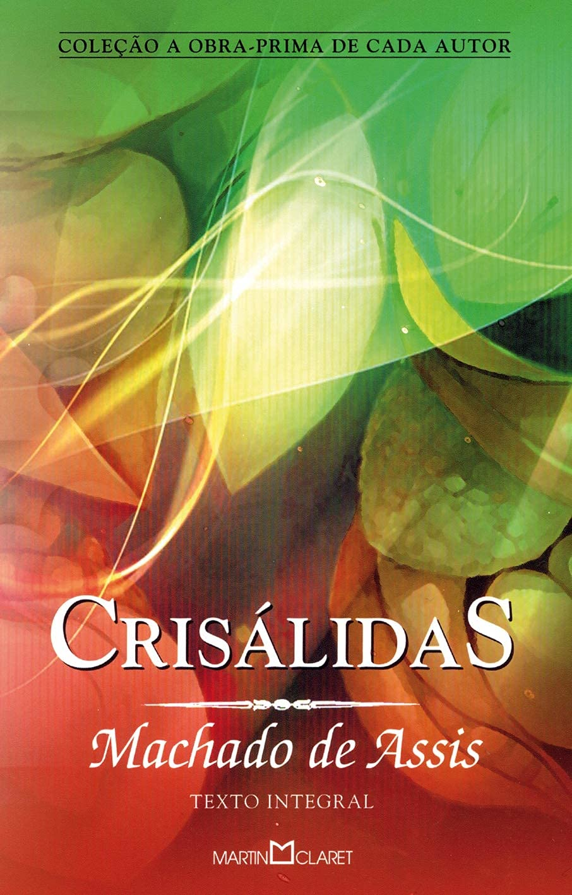
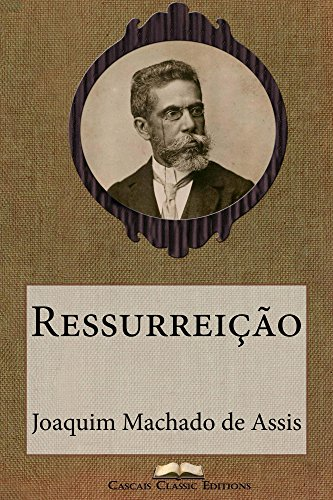

Obras
Estas são as obras mais famosas de Machado de Assis
Crisálidas

publicado em 1864
Dom Casmurro

publicado em 1881
Isaú e Jacó

publicado em 1904
Iaiá Garca

publicado em 1878
Memórias postumas de Brás Cuba

publicado em 1881
Quincas Borba

publicado em 1891
Ressureição

publicado em 1872
Histórias da meia-noite

publicado em 1873